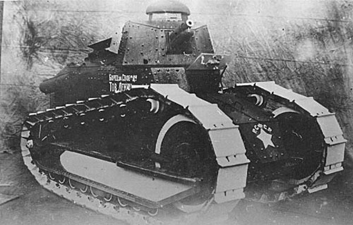
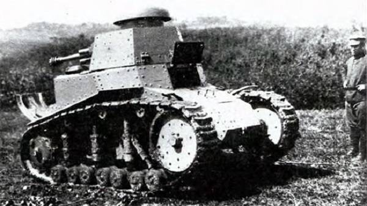
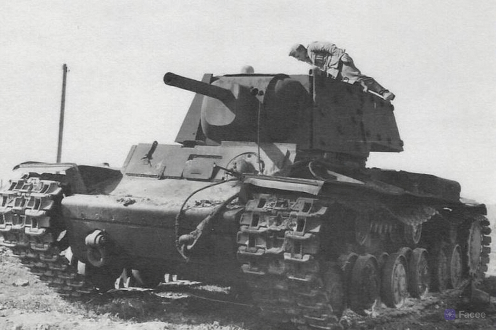
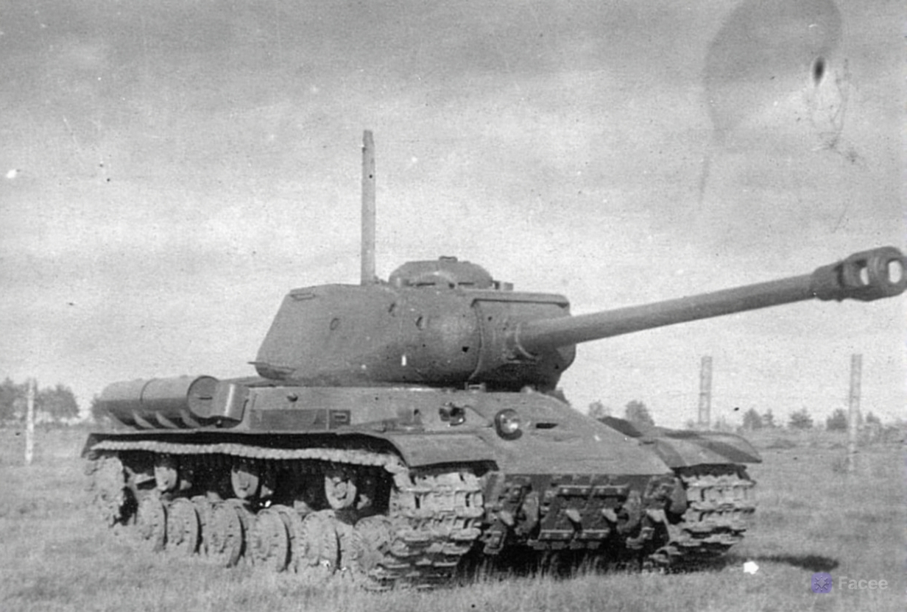
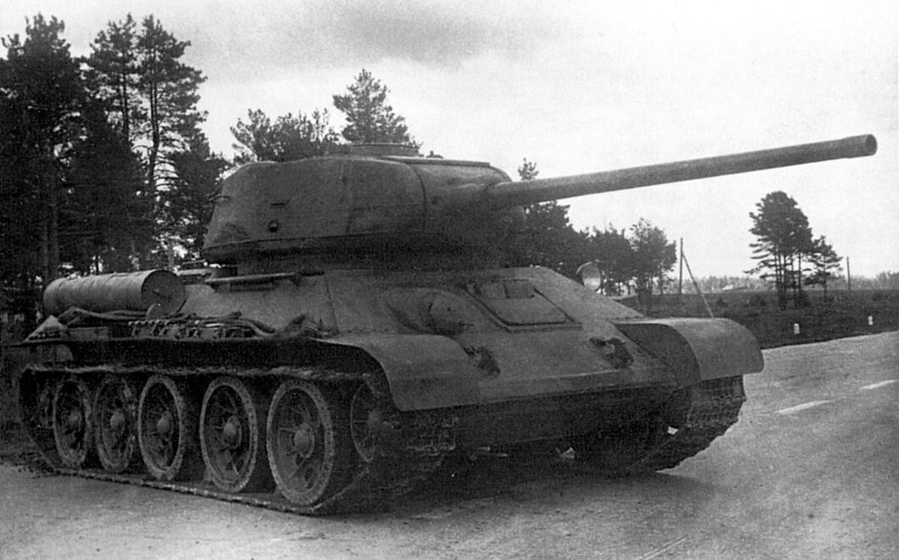
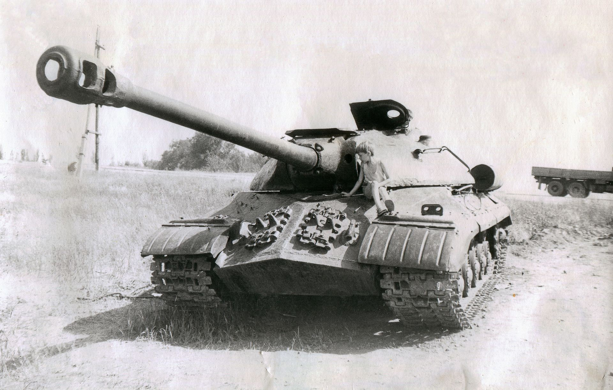
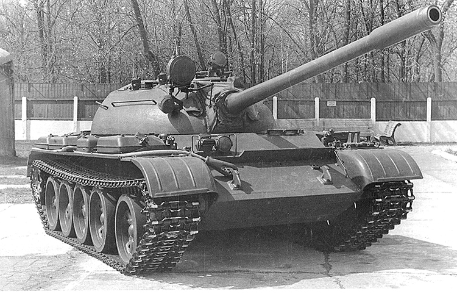

История советских танков
Советские конструкторские бюро стали настоящей кузницей легендарных машин, определивших ход истории XX
века. Именно здесь рождались танки, сочетавшие в себе мощь, надёжность и инновационные решения, которые
восхищают специалистов и по сей день. Благодаря самоотверженному труду тысяч инженеров, технологов и
рабочих, СССР смог создать уникальные образцы бронетехники, прославившиеся на весь мир — от Т-34 до
Т-80.
На страницах этого сайта мы расскажем о выдающихся конструкторах, их смелых идеях и о том, как
создавалась бронетехника, ставшая символом целой эпохи. Вы узнаете о секретах проектирования, испытаниях
и боевом пути знаменитых машин. Погрузитесь в мир инженерного искусства, где каждая деталь была
продумана для победы.

«Рено-русский» Первый советский танк 1920г
31 августа 1920 года на заводе «Красное Сормово» в Нижнем Новгороде был выпущен первый
Советский серийный танк — «Борец за свободу товарищ Ленин», также известный как «Рено-русский». Это
событие
стало отправной точкой для создания отечественной танковой промышленности и оказало значительное влияние
на
дальнейшее развитие военной техники в стране.
История появления первого русского танка уходит корнями в начало XX века, когда
российские инженеры и изобретатели начали проявлять интерес к новейшей военной технике. Уже в 1911 году
Александр Пороховщиков разработал проект бронированного автомобиля, который можно считать одним из
первых танковых прототипов.
Тем не менее к началу Первой мировой войны Россия оказалась не готова к серийному производству танков.
Пока на европейских фронтах активно применялись английские и французские боевые машины, в русской армии
собственных танков не было. Этот факт стал одной из причин значительных потерь среди российских войск в
первые годы войны.

МС-1 (Т-18) 1925г
Легкий танк Т-18 (МС-1) стал первым образцом бронетехники, который был полностью разработан в СССР и
выпущен крупной серией — всего было построено 960 машин. Производство танка, также известного как
«малый танк сопровождения — 1», началось в 1927 и продолжалось до 1931 года. Вооружение Т-18
состояло из 37-мм пушки и 7,62-мм пулемёта. По своим характеристикам он не уступал зарубежным
аналогам того времени, что позволило СССР преодолеть десятилетнее отставание от западных стран в области
танкостроения.
Основное назначение Т-18 — подготовка экипажей, однако отдельные экземпляры оставались в строю вплоть до
1941 года. В начальный период Великой Отечественной войны эти танки применялись как неподвижные
огневые
точки (ДОТы).
Танки военного времяни
К 1941 году конструкторов ожидали нелёгкие времена: впереди были эвакуация заводов, работа под
постоянными обстрелами и острая нехватка ресурсов. Однако именно в этих суровых условиях советские
инженеры проявили невероятную стойкость и изобретательность, создавая танки, которые стали символом
победы. Благодаря их труду и самоотверженности фронт получал машины, способные противостоять любому
противнику.
В этот период было создано множество легендарных образцов бронетехники, каждый из которых внёс свой
вклад в общее дело. Среди них особо выделяется КВ-1 — тяжёлый танк, чья практически неуязвимая броня
наводила ужас на врага и вселяла уверенность в наших солдат. Именно опыт, полученный при эксплуатации
КВ-1, лёг в основу дальнейшего развития советского танкостроения и позволил создать ещё более
совершенные боевые машины.

КВ-1 (Климент Варашилов) 1940-1942гг
Существует легенда, связанная с созданием советского тяжёлого танка «СМК». Когда И.В.
Сталину представили прототип этой многобашенной машины (по конструкции схожей с Т-35, но только с двумя
башнями вместо пяти), он распорядился снять одну из башен. Узнав её вес, Сталин предложил использовать
освободившуюся массу для усиления бронирования. Достоверность этой истории неизвестна, однако факт
остаётся фактом: на смену проекту «СМК» пришёл КВ-1 («Климент Ворошилов») — однобашенный танк с
выдающейся защитой.
КВ-1 стал настоящим прорывом по сравнению с многобашенными «сухопутными броненосцами»
1930-х годов. К началу Великой Отечественной войны этот танк был одним из самых защищённых и при этом
достаточно манёвренных в мире. Его лобовая броня на момент запуска в серию не пробивалась большинством
противотанковых орудий того времени. Серийное производство КВ-1 продолжалось с 1939 по 1943 год, и всего
было выпущено 5219 экземпляров, что сделало его самым массовым тяжёлым танком СССР в годы Второй мировой
войны.
Внедрение КВ-1 в войска существенно повысило боевые возможности танковых частей Красной Армии. Танк
отличался не только надёжной бронёй, но и мощным вооружением, что позволяло ему эффективно противостоять
противнику даже в самых тяжёлых условиях начального периода войны. Опыт эксплуатации КВ-1 лёг в основу
дальнейшего развития советского танкостроения и создания таких легендарных машин, как ИС-2.

ИС-1 (Иосиф Сталин) 1943-1944гг
Тяжёлый танк ИС-1 («Иосиф Сталин») был создан на базе КВ-1 в результате глубокой модернизации. Несмотря
на внешнее сходство, ИС-1 получился компактнее за счёт более плотной компоновки, обладал усиленной
бронёй и отличался повышенной надёжностью и лучшими эксплуатационными характеристиками по сравнению с
предшественником.
Вооружение ИС-1 было аналогично КВ-85, что позволяло ему эффективно противостоять немецкому танку
«Тигр». Однако военное руководство требовало машину с более мощным орудием, поэтому после выпуска всего
130 единиц производство ИС-1 было прекращено в пользу более совершенного ИС-2.
В конструкции ИС-1 впервые были реализованы многие технические решения, которые впоследствии стали
стандартом для советских тяжёлых танков. Несмотря на короткий период службы, эта машина сыграла важную
роль в развитии отечественного танкостроения и послужила основой для создания легендарного ИС-2.

Т-34-85мм (Объект 135) 1940-1958гг
Т-34 — легендарный танк Великой Отечественной. За три года серийного производства его конструкция
претерпела тысячи изменений и усовершенствований. К 1943 году танк получил новую двухместную башню и
мощную 85-мм пушку С-53, которая отличалась простотой и надёжностью по сравнению с Д-5Т, стоявшей на
КВ-85 и ИС-1.
Эти доработки позволили Т-34 вернуть боевую эффективность, утраченную к 1943 году из-за появления у
противника новых танков, против которых ранние модификации были уязвимы. Более того, танк оказался
настолько удачным, что оставался на вооружении в разных странах десятилетиями после окончания Второй
мировой войны.
Всего было выпущено около 48 000 таких машин, включая послевоенное производство — в Польше, например,
малыми сериями Т-34 собирали до 1959 года.
Танки послевоенного периода
После окончания Второй мировой войны перед советскими конструкторами встала задача не только закрепить
успех, достигнутый в годы войны, но и создать принципиально новые боевые машины, способные противостоять
угрозам ядерной войны и новым видам вооружений. В этот период особое внимание уделялось усилению
бронезащиты, повышению огневой мощи и манёвренности танков, а также внедрению инновационных технических
решений, которые определяли облик бронетехники на десятилетия вперёд.
Именно в это время был создан один из самых узнаваемых и технологичных тяжёлых танков своего времени —
ИС-3. Эта машина стала настоящим символом мощи советского танкостроения и воплощением передовых
инженерных идей конца 1940-х годов. Его появление ознаменовало новый этап в развитии тяжёлой
бронетехники, а многие решения, реализованные в конструкции ИС-3, оказали влияние на последующие
поколения советских и зарубежных танков.

ИС-3 (Иосиф Сталин) 1945-1946гг
ИС-3 — советский тяжёлый танк, завершивший эпоху тяжёлых машин военного периода.
Разработка велась в последние годы Великой Отечественной войны, но принять участие в её завершающих
сражениях танк не успел: серийное производство началось лишь в последние дни войны, и в войска ИС-3 стал
поступать уже после падения Берлина. Поэтому его справедливо считают одним из первых послевоенных
советских танков, хотя конструктивно он завершал линейку машин военного времени
Главной особенностью ИС-3 стала революционная для своего времени конструкция корпуса и
башни. Танк получил литую башню приплюснутой сферической формы и обтекаемый корпус с так называемым
«щучьим носом», что обеспечивало отличную защиту от снарядов и стало примером для последующих поколений
бронетехники. ИС-3 сочетал в себе мощное бронирование, надёжную 122-мм пушку и хорошую подвижность для
тяжёлого танка, что сделало его одним из самых сбалансированных представителей своего класса
Несмотря на то, что ИС-3 практически не участвовал в боевых действиях Второй мировой войны, он оказал
огромное влияние на развитие мирового танкостроения. Всего было выпущено более 2 300 машин, которые не
только стояли на вооружении СССР до конца 1980-х годов, но и активно экспортировались за рубеж. ИС-3
принимал участие в ряде послевоенных конфликтов, в том числе в арабо-израильских войнах, а его образ
стал символом мощи советского танкопрома и часто использовался на военных парадах и в качестве
памятников

Т-55 (Объект 155) 1958-1979гг
Т-55 — легендарный советский средний танк, созданный на базе Т-54 и ставший одним из самых массовых в
истории мирового танкостроения. Его серийное производство велось с 1958 по 1979 год, а всего было
выпущено более 20 тысяч единиц различных модификаций. Танк отличался высокой надёжностью, простотой в
эксплуатации и возможностью ведения боевых действий в условиях применения ядерного оружия, что
обеспечило ему широчайшее распространение по всему миру.
Главным новшеством Т-55 стала автоматическая система противоатомной защиты, позволявшая экипажу
эффективно действовать в условиях радиационного заражения. Кроме того, танк получил более мощный
двигатель, увеличенный боекомплект, термодымовую аппаратуру и автоматическую систему пожаротушения. Эти
усовершенствования сделали Т-55 одним из самых современных и универсальных танков своего времени, а его
конструкция стала базой для многочисленных последующих модернизаций.
Даже спустя десятилетия после окончания серийного производства Т-55 остаётся в строю во многих странах
мира. Его ценят за неприхотливость, доступность запчастей и возможность глубокой модернизации. Танк
участвовал в десятках вооружённых конфликтов и до сих пор востребован в армиях ряда государств, а его
конструктивные решения легли в основу многих последующих поколений боевых машин